Последнее время со мной творится что-то… странное. Всё готово для побега, я мог бы уйти хоть завтра, но я не могу перестать думать об этих жутких гироидах. С тех пор как я откопал первый, я нашёл ещё несколько — они повсюду, зарытые в земле. Интересно, сколько их ещё там?
О, и ещё: после нескольких месяцев каторжной работы я наконец расплатился с Нуком.
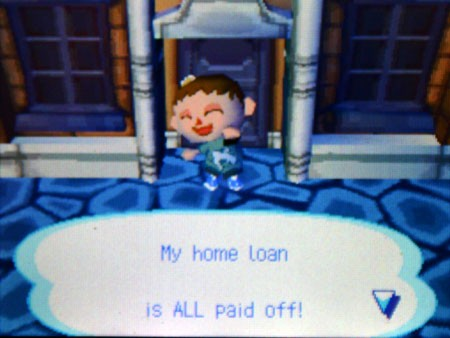
Это оказалось не таким уж великим достижением, как я думал, хотя меня уже ничем не удивишь. Я заглянул к Нуку за очередной порцией разочарования и увидел, что он потратил свои нечестно заработанные бабки на ремонт своей лавки.
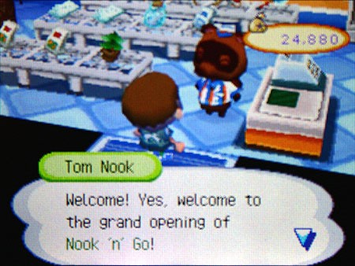
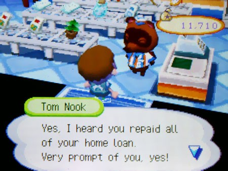
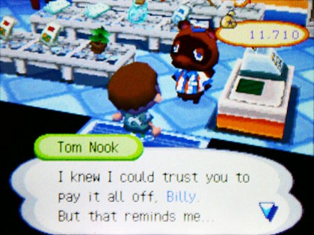
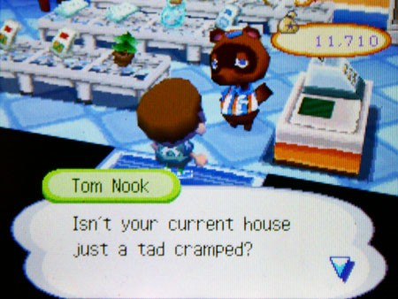
Етижи-пассатижи. Стоило ожидать подобного.
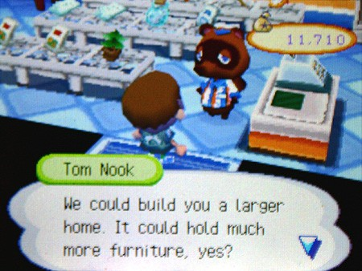
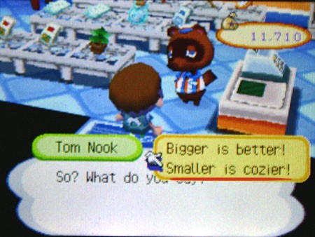
Выбор Билли:«Мелко – уютно!»
Я попытался немного в дипломатию.
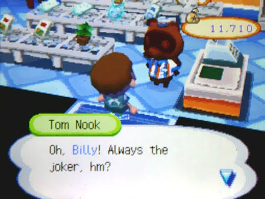
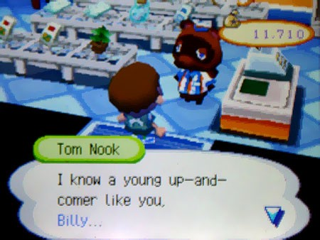

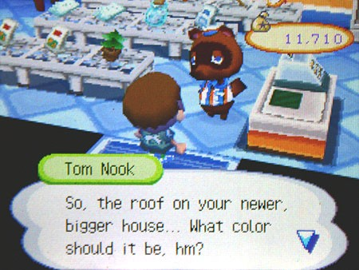
Какой ещё новый дом?
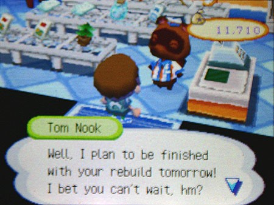
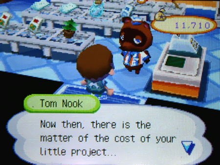
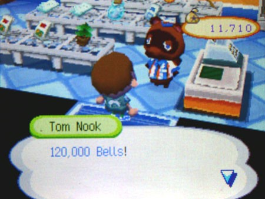

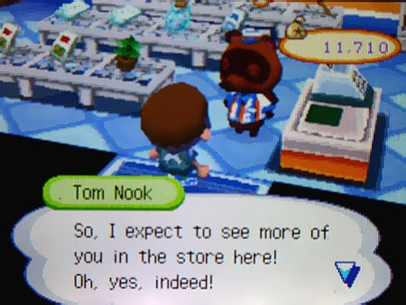
Нук спрашивает, какого цвета мне сделать крышу, и — бац! — уже до ночи у меня в доме рабочие выламывают стены, не давая мне покоя.
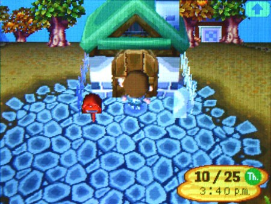
ЁБ ВАШУ МАМАШУ.
Я проспал на улице той ночью — холодный и окоченевший. И теперь я должен ему ещё больше. Он даже не слушал моё «нет». Откуда у него бабло на всё это? Может, он продавал мои кости (за которые платил мне бумажками) за реальные деньги какой-то левой конторе? Может, окаменелости всё-таки настоящие… и это был его план — использовать меня как бесплатного детского археолога? Но это как-то… не по-Нуковски подло.
Я возвращаюсь к работе. Нужно найти ещё этих гироидов.
Я соорудил из них маленький алтарь в углу своего нового, расширенного дома. Когда я нашёл первый, он иногда издавал звуки. Теперь у меня целая коллекция, и я начал видеть картинки в голове и слышать металлические слова, разлетающиеся по комнате. Они шептали «копай» или «дождь», но я никогда не мог разобрать целую фразу.
Я возвращался домой и находил их в других позах, будто они двигались, пока меня не было. Теперь их несколько, и я слышу их голоса чаще — будто они переговариваются между собой. Ночью я просыпался в холодном поту, крался вниз и смотрел на них. Но они всегда были неподвижны.

Я понимаю, что с этими гироидами что-то серьёзно не так, но стоит мне лишь подумать о том, чтобы выбросить их, как у меня внутри всё сжимается, будто в живот врезали кулаком. Это как иметь детское одеялко, но сделанное из асбеста. В каком-то ненормальном смысле они стали моими единственными друзьями…
Я не вспоминал о побеге уже неделями. Мои движения стали какими-то ватными, будто каждый шаг — это борьба с болотной грязью. Если я не выкапываю гироидов, я просто занимаюсь чем-то, над чем не стоит задумываться.
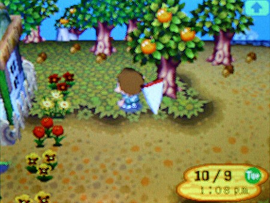
Понедельник. Лениво ловлю букашек.
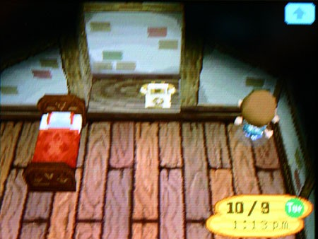
Вторник. Честно… не помню, что там было…
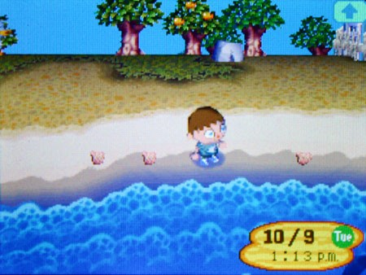
В среду я, кажется, ловил рыбу или собирал ракушки. Кроме Нука, никто из жителей не говорил мне ни слова уже несколько недель.
Я мельком подумал (вопреки здравому смыслу) о том, чтобы попытаться завязать какие-то жалкие отношения с кем-то из них, но быстро понял, что это бессмысленно. Жители постоянно перемещались по лагерю, не задерживаясь. Иногда я заглядывал в почтовый ящик и находил письмо о том, что кто-то просто собрал вещи и уехал посреди ночи.

Их письма содержат шаблонные прощания, которые, я уверен, они не писали. Я даже не знаю, кто такой «Риббот», но теперь его нет. Подобные домики либо пусты, либо забиты досками.
Исчезают в одночасье. Куда они деваются? И зачем?
Да какая разница. Единственный, кто в этом городе был хоть сколько-то вменяемым, — это пёс, который иногда торчит в холле музея.

Слайдер — единственный, кто не общался со мной как пациент психушки. Он появляется поздно вечером по субботам, чтобы играть на гитаре. Иногда его песни — единственное, что отвлекает меня от этого ужаса, пусть даже на несколько минут. Со временем я понял, что он приходит сюда только для того, чтобы утешить меня, — никто другой никогда не приходит на его концерты. Мне кажется, он действительно испытывает ко мне жалость: в его глазах всегда стоит тревожное выражение, словно игра на гитаре — это его способ извиниться…
Сонным — вот как я себя чувствовал всё это время. Не уставшим, а именно сонным. Именно поэтому я просто лежал на земле в тот день, глядя, как плывут облака, и слушая, как волны разбиваются о берег.
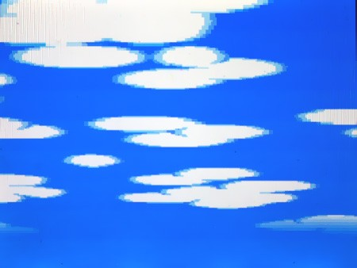
Я вдруг подумал: а ведь я ни разу не видел в этом лагере птиц, ни разу не слышал криков чаек на берегу. Ни самолётов, ни лодок — ничего. Вокруг только бесконечное голубое небо, белые облака и маленькие коробочки на воздушных шариках… погодите, что? ЧЕ ЗА ХУЙНЯ?!
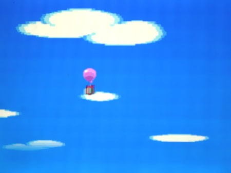
Абсурдность этого ударяет меня как ведро холодной воды в лицо, я вскакиваю на ноги и бегу к тому месту, где сильный солёный ветер быстро уносил шар мимо каменных стен лагеря.
Я оглядываюсь в поисках чего-нибудь, что можно было бы бросить, хватаю пригоршню камней и начинаю швырять. Как раз, когда шар готов был навсегда уплыть от меня, мне повезло — я попал в шарик.
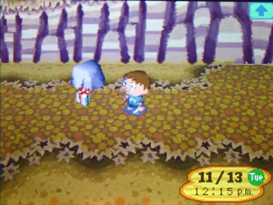
Часы, потраченные на то, чтобы пускать камешки по воде, окупились — посылка рухнула на землю с тихим звоном разбитого стекла.
Я беру её как бомбу — осторожно, будто жду, что взорвётся. Разворачиваю бумагу и вижу… сломанную настольную лампу? Это просто бессмыслица: кому вообще взбредёт в голову отправлять лампу на воздушном шаре, зная, что она разобьётся при падении? Я подумал, что это очередные игры Нука с моей головой, но… это было не в его стиле.
Я обшариваю коробку в поисках чего-то ещё. И нахожу. В подкладке торчит уголок белого конверта — спрятанный между бумагой и картоном. Конверт пустой снаружи. Я, не раздумывая, разрываю его и читаю.
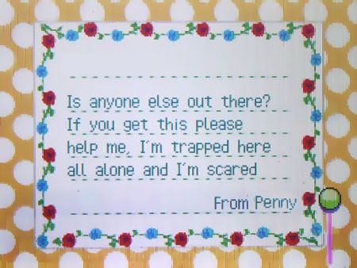
Вы, должно быть, шутите.